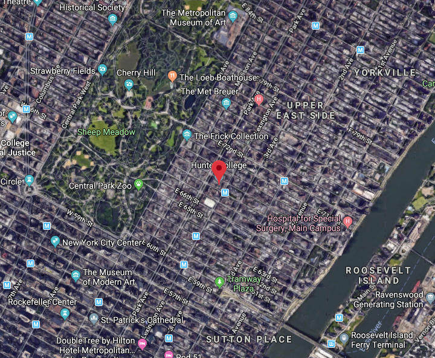
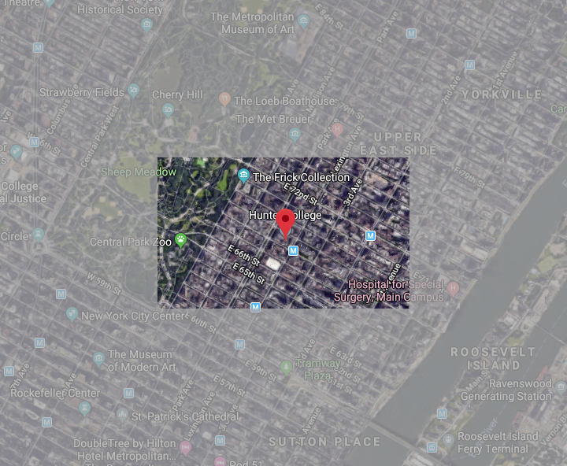

Submit the following programs via the honors section of Gradescope:
Throughout the semester, we will analyze the Affordable Housing Production by Building dataset, which is generated by the Department of Housing Preservation and Development (HPD), reporting on buildings, units, and projects that began after January 1, 2014 and are counted towards the Housing New York or Housing Our Neighbors plan. The Affordable Housing Production by Building file presents this data by building, and includes building-level data, such as house number, street name, BBL, and BIN for each building in a project.
We will work in teams. Each team will choose a borough to analyze. Each team member will then choose a neighborhood in that borough to report on.
Throughout the semester each team will provide different analyses of the overall borough supplemented by analyses of the chosen neighborhoods.
These analyses will be broken down across different assignments and will be summarized at the end of the semester in a showcase presentation.
We propose that you use the Affordable Housing Production by Building dataset. However, we give you the freedom to choose a different dataset if that would inspire you more. A great place to look for data is NYC Open Data. If you choose a different dataset, it must have the following properties to guarantee that you will be able to fulfill all the assignments despite working with different data:
Discuss with your assigned team to decide on a dataset, then move on to Step 2.
Note: You don't need to identify the alternate dataset in this assignment, but if you are considering it you should indicate so in Step 2 and must identify the dataset no later than our next meeting on September 16.
Work with your assigned team to complete the Team Contract.
Once your contract is complete and signed by all team members, upload a .pdf to the assignment HC1 in the honors section of Gradescope. This will be a group submission (one submission per team). Unlike the Python code, it is not automatically graded.
To begin, discuss with your team to pick a neighborhood in your team's borough (a different neighborhood for each team member). Keep in mind that you want all the neighborhoods together to be representative of the borough. You also want to be sure your neighborhood is well represented in the dataset.
Create a single page summary of your neighborhood that includes at least the following:
Submit a .pdf file containing your summary.
Design a ranking for the most desirable features of a neighborhood.
There are multiple rankings of New York City Neighborhoods. For example,
With your group:You can share a Google Doc or you can use a collaboration tool for this project like Miro or Padlet. Both have a free plan option that should be enough for the purpose of this project.
Submission: Submit a single .pdf file containing your assessment of the rankings and the three most desirable qualities, as well as a ranking of your team's borough (if all neighborhoods fare the same, you may indicate so and group the discussion to the borough). You should use complete sentences, compare and contrast the rankings above and justify the three qualities that your group thought most important. This will be a group submission (one submission per team).
As rents raise, what obstacles did renters face?
Is there anything specific to your neighborhood that made renting easier/harder?
With your group, browse the web to consider/research the topic.
Grading criteria:
Submission: Submit a one-page summary of your findings and cite your sources. This is a group submission (one submission per team).
In this meeting we will discuss your findings from HC 2, HC 3 and HC 4. Each team will summarize the overall discussion of the borough and how that relates to the individual neighborhoods.
No submission necessary. This assignment will be graded based on your group's contribution to the discussion.
Grading criteria:
 
For this program, we will create a highlighted map centered around your neighborhood, with a boxed region around a marker at the center of the neighborhood at full brightness, the region outside that box at 50% brightness.
To do this:
Submission: Submit your answer as a .pdf file (both code and image) to Gradescope.
For this assignment, we will analyze our dataset Affordable_Housing_Production_by_Building.csv. This assignment will span over the course of two weeks (two meetings).
During the first meeting, on 14 October, look over this data-exploration document, it will illustrate how to explore, clean and visualize the data.
This is an interactive computational environment (an Jupyter, a.k.a. ipython, notebook hosted in Google Colab). To execute each cell, one at a time, click on the play button or, with the cell highlighted, press Shift+Enter on your keyboard. The order in which you execute the cells matters. Start at the top, and work your way down the notebook, discuss it and make sure you understand it. Then make a plan together about what you will look for in the data and how.
Come to our next meeting , on 21 October, with a clear plan, perhaps even a working-in-progress program (this is not a typo, it means a working program even if not final) and you will work as a team to refine your plan ( or your program) and produce the group analysis for the borough combining your ideas.
You will discuss your plan during the next meeting.
There are two parts to this analysis:
Grading Criteria:
During our meeting on October 21, discuss your analysis with your teammates, and decide on a plan for the group neighborhood analysis, keeping in mind the grading criteria below as a guide.
Make a plan on how to split the work for the group analyisis and how you will consolidate it into a unique submission.
There will be one submission for each group, including:
Grading Criteria (same for both submissions):
What to submit:
If you use Google Colab, you can print/save as pdf. and submit. Make sure every result (statistics and plots) is supported by a paragraph describing it. The paragraph should not only describe what you are doing (the code), but most importantly what you observe.
If you write a python program (.py) submit two files:
In class on October 29 each team will briefly present their data analysis and other teams will provide feedback.
Each team will then resubmit a revised data analysis that addresses the feedback.
Using folium, generate an html map with markers for affordable housing in your neighborhood.
To do so:
Hint: You can mirror the program in Lab9 that creates a map with markers for CUNY campuses.
Note: If your neighborhood has too many listings and the map is excessively crowded, you can select a random subset. Don't remove too many, however, so that the map remains representative of the data.
Submit a screenshot of your map and your code as a .pdf file.
We are going to use github to make webpages for your projects. There will be only one site for each project, but we want everyone to set up their own neighborhood page the project webpage will link to.
Create a github page for your neighborhood.
To embed an html as an iframe use the following html tag (assuming your map is called manhattan.html and it lives in the same directory as the page you want to embed it into)
<iframe src="manhattan.html" width="600" height="400" frameborder="0" frameborder="0" marginwidth="0" marginheight="0" allowfullscreen></iframe>
<dl>
<iframe src="manhattan.html" width="600" height="400" frameborder="0" frameborder="0" marginwidth="0" marginheight="0" allowfullscreen></iframe>
</dl>
Submit a .pdf file that contains the URL of your project on github (web address) and a screenshot of your project.
Useful links:
Generate a project webpage with a small introduction that includes the information in your slides, a brief summary of your borough overview (from HC2, HC3, HC8) and links to all neighborhood webpages.
Submit the slides of your group presentation (two slides) as a .pdf file. Your slides should include who is on the team, the neighborhoods you looked at, a brief description/summary of the project and a link to the project webpage (your presentation must be 3-5 minutes).
During our meeting each team will share their project webpage and the rest of the class will provide constructive feedback for improvement.
As per your Team Contract signed at the beginning of the semester, you will evaluate each member of your team by filling out and submitting this form. After you fill it out, submit the form as pdf.
Each team will present their project (5 minutes each, 2 slides), then we will break into groups and our visitors will join different groups where you will do a poster-like presentation using the project webpage to talk more about your project and individual contributions.